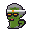
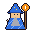

← Home · Play · Rules · How It Works
New here? Start with How It Works →
Pet Guide
What is an XCPETS pet?
An XCPETS pet is an 8-bit meme character that lives on Bitcoin. You hatch one by burning XCPETS on Counterparty. Each pet comes from a Bitcoin block hash plus its pet id. Anyone can rebuild any pet from those two values and get the exact same pixels. Nobody picks your pet. The block decides.
The 15 species
| Pepe: the smug green frog. Any tier. | |
| Wojak: the bald feels guy with tired eyes. Any tier. | |
| Chud: Wojak's cousin. His clear glasses never come off. Any tier. | |
| Peepo: a little frog with huge bulging eyes. Happy one day, sad the next. Any tier. | |
| Doge: the shiba. Wow. Any tier. | |
| Bobo: the bear. Uncommon and up. | |
| Mumu: the bull. Uncommon and up. | |
| Sarutobi: the monkey with a tan face and round ears. Uncommon and up. | |
| Lenny: the raised-eyebrow face, now a pet. Uncommon and up. | |
| Snibby: a yellow crab with tall eyestalks and a big grin. Rare and up. | |
| KEVIN: green slit eyes and a flat stare. Rare and up. | |
| Dodo: the dark bird with red webbed feet. Legendary only. | |
 | Nakamoto: always Legendary. Nakamotos are no longer hatched; existing ones are kept. The 1 in 777 egg is now a Bitcoin Wizard egg. |
 | Bitcoin Wizard: the purple-hatted wizard with a grey beard and a Bitcoin staff. Hatches only from the 1 in 777 egg. Egg Wizards are Rare (about 77%) or Legendary (about 23%), never Common or Uncommon; prize Wizards are Legendary. Wizard eggs stop when Lord Kek reaches Mythic. From block 972,716 player Bitcoin Wizards breed like any pet: with another species the egg is a Wizard hybrid about 68% of the time, Wizard times Wizard is always a Bitcoin Wizard. The community Wizard never breeds. |
| Lord Kek: the green frog-god in a striped Egyptian nemes headdress (red and gold for player Keks, lapis and gold for the community pet). The community pet now, in the Bitcoin Wizard's place. Not hatched yet. When he reaches Mythic and goes to Cold Storage, the 1 in 777 egg becomes a Lord Kek egg that anyone can hatch. From block 972,912 Lord Kek eggs are Rare (about 77%) or Legendary (about 23%), never Common or Uncommon; Keks hatched before that keep their tier. There is no other way to get one. Player Lord Keks grow and breed like any pet, and their hybrids use the Pepe body. |
Rarity tiers
Every egg first has a 1 in 777 chance to be a Bitcoin Wizard egg (this used to be Nakamoto; Nakamotos are no longer hatched, existing ones are kept). When Lord Kek reaches Mythic, it becomes a 1 in 777 chance of a Lord Kek egg instead. Otherwise the egg rolls a tier. The tier decides:
- which species it can be
- a bonus added to every stat
- which patterns, eyes and gear it can roll
| Tier | Hatch odds | Stat bonus |
|---|---|---|
| Common | 60% (about 3 in 5) | +0 |
| Uncommon | 27% (about 1 in 4) | +3 |
| Rare | 10% (1 in 10) | +6 |
| Legendary | 3% (about 1 in 33) | +10 |
⚡ Electric Eggs (Electric Shock Box, pet:hatchzap, 1,000 eggs, from block 972,992): Common 30%, Uncommon 40%, Rare 22%, Legendary 8%. Species odds inside each tier and the 1 in 777 special egg are the same as a normal egg. Mythic is a stage, not a hatch tier. Full odds
Nakamoto eggs were always Legendary. Bitcoin Wizards are Rare or Legendary (from block 972,404): egg Wizards roll Rare (about 77%) or Legendary (about 23%), never Common or Uncommon; prize Wizards are Legendary. From 972,399 to 972,403 every Wizard was Rare.
Which species can hatch at each tier
Each species has a lowest tier. It can hatch at that tier or any rarer one, and shows up most often in its starting tier.
- From Common: Pepe, Wojak, Chud, Peepo, Doge
- From Uncommon: Bobo, Mumu, Sarutobi, Lenny
- From Rare: Snibby, KEVIN
- Legendary only: Dodo
- Bitcoin Wizard: 1 in 777 eggs (the egg that used to be Nakamoto), Rare or Legendary (about 77% Rare, 23% Legendary, from block 972,404); prize Wizards are Legendary. Nakamoto is always Legendary.
- Community pets (Bitcoin Wizard, Lord Kek, FUNTRUMP): from block 972,912 every community-pet egg is Rare or Legendary (about 77% / 23%) and a pure bred baby of one is at least Rare. Pets hatched before keep their tier.
- Nakamoto: no longer hatched; existing ones are kept.
- Lord Kek: not hatched yet. After he reaches Mythic, the 1 in 777 egg is a Lord Kek egg and Wizard eggs stop. From block 972,912 Lord Kek eggs are Rare or Legendary (about 77% / 23%), like Wizards and FUNTRUMP.
Hatch odds by species
"Overall" is your chance per egg. The tier columns are your chance once the egg has rolled that tier. KEVIN, Sarutobi and Lenny get a small Legendary boost (set when Nakamoto was the 1 in 777 egg).
| Pet | Lowest tier | Common | Uncommon | Rare | Legendary | Overall | |
|---|---|---|---|---|---|---|---|
| Pepe | Common | 27.3% | 7.3% | 9.0% | 9.0% | 19.48% | |
| Wojak | Common | 27.3% | 7.3% | 9.0% | 9.0% | 19.48% | |
| Chud | Common | 18.2% | 4.9% | 6.0% | 6.0% | 12.99% | |
| Peepo | Common | 13.6% | 3.7% | 4.5% | 4.5% | 9.74% | |
| Doge | Common | 13.6% | 3.7% | 4.5% | 4.5% | 9.74% | |
| Bobo | Uncommon | – | 24.4% | 7.5% | 7.5% | 7.55% | |
| Mumu | Uncommon | – | 24.4% | 7.5% | 7.5% | 7.55% | |
| Sarutobi | Uncommon | – | 12.2% | 3.7% | 4.9% | 3.81% | |
| Lenny | Uncommon | – | 12.2% | 3.7% | 4.9% | 3.81% | |
| Snibby | Rare | – | – | 29.9% | 7.5% | 3.21% | |
| KEVIN | Rare | – | – | 14.9% | 4.9% | 1.64% | |
| Dodo | Legendary | – | – | – | 29.9% | 0.90% | |
| Nakamoto | Legendary | – | – | – | – | no longer hatched | |
| Bitcoin Wizard | Rare | – | – | 76.9%* | 23.1%* | 0.13% (1 in 777) |
* The Wizard egg is drawn before the tier roll, so its Rare and Legendary columns are the split among Wizard eggs, not a share of that tier.
Rarest Legendaries:
- Nakamoto: no longer hatched. Existing ones are kept, so they stay rare. The 1 in 777 egg is now a Bitcoin Wizard egg.
- Legendary Bitcoin Wizard (egg): about 1 in 3,367
- Legendary Peepo or Doge: about 1 in 744
- Legendary KEVIN, Sarutobi or Lenny: about 1 in 676 each
- Legendary Chud: about 1 in 558
- Legendary Bobo, Mumu or Snibby: about 1 in 447
- Legendary Pepe or Wojak: about 1 in 372
- Legendary Dodo: about 1 in 112
Stats
Every pet has five stats: Vigor, Spark, Grit, Zoom, Luck.
- Each stat starts at a roll from 1 to 20, plus the tier bonus (Common +0, Uncommon +3, Rare +6, Legendary +10).
- Stats are set at birth. Higher stages give a pet more HP in battle.
- Power is all five stats added together.
Looks: patterns, eyes and more
Your pet's colors always match its species. The extras roll by tier. Rarer tiers unlock rarer options.
Patterns
- Any tier: Plain, Belly patch, Spots
- Uncommon and up: Stripes, Socks, Bandit mask
- Rare and up: Checker, Two-tone
- Legendary only: Galaxy, Rainbow
Eyes
- Any tier: Classic, Sunglasses
- Uncommon and up: Tinted
- Rare and up: Star
- Legendary only: Laser eyes
Cheeks (Blush, Freckles, Tear tracks or none), background and a random name also come from the block. Your pet's face changes with each stage.
Growing up: six stages
Egg → Hatchling → Juvenile → Adult → Elder → Mythic
You grow your pet by burning XCPETS to feed it. Each meal adds that stage's meal size to its "care".
- Hatch: 69 XCPETS. A hatched pet starts as a Hatchling (69 care). A bred Egg needs a 69 meal to hatch.
- Feed once per day (a day is 144 Bitcoin blocks). A burn below the meal doesn't count, and anything above it only feeds the community pet.
- Raising a pet to Mythic costs 69,069 XCPETS in total.
| Stage | Total care needed | Meal |
|---|---|---|
| Egg | 0 | 69 |
| Hatchling | 69 | 4,140 |
| Juvenile | 8,349 | 6,900 |
| Adult | 22,149 | 9,660 |
| Elder | 41,469 | 9,200 |
| Mythic | 69,069 | never needs feeding |
- With one meal a day, a pet reaches Mythic in about 9 days. Meals are capped per stage, so you can't skip ahead.
- At Mythic your pet is fully fed. It never needs feeding again.
- Mythic discount: once you own one Mythic pet, Mythic for all your other pets needs only 21,000 care. Pets already past 21,000 become Mythic right away, even before Elder.
- Overflow spins: each of those pets also earns one free saved Pepe Wheel spin for every full 1,000 care above 21,000.
Don't forget to feed it. Feed at least once every chain day (144 blocks). From the 3rd day after its last meal, a pet is neglected (no battles or breeding). After 7 full days with no meal, it dies and moves to the Pet Cemetery; its gear goes back to your stash. Mythic pets never starve.
Gear
Pets wear gear in six slots: Headwear, Grip, Outfits, Drip, Guise, Footwear
- A new pet has 1 slot open.
- More slots open as your pet gets older (at 2, 5 and 10 days old) and as you keep it fed (at 50% and 80% of days fed, with at least 3 fed days for the last one). The most is 6.
- Mythic pets have all 6 slots. Slots never close once open.
- Slots open in this order: Headwear, Grip, Outfits, Drip, Guise, Footwear.
- Get gear by burning 345 XCPETS for a roll (a Pepe Wheel spin, below). A roll can land in any of the 6 slots. A piece for a slot the pet hasn't opened yet waits in that pet's bag and is worn when the slot opens, unless something is already worn there. The bag belongs to that pet and is lost with it. The community pet always wears community-rolled gear right away (the newest piece replaces that slot). Lucky drops: moving up a stage has a 25% chance to give a free saved Pepe Wheel spin, and a normal meal has a 2% chance.
- Each slot holds one piece. A piece you replace goes back to your stash. Equipping is free and only saved in this browser.
- Gear tiers follow the pet's tier: a pet rolls gear up to its own rarity.
Signature legendary hats. Every species except Nakamoto has one signature hat, plus a few other ★ signature pieces. Only that species can roll them or wear them (hybrids can wear their parents' ★ pieces, except the hat), they only roll on Legendary pets, and they can never be taken in battle.
The Pepe Wheel (live since block 972,589): every paid gear roll, pet:spin or an old pet:roll:ID (the ID is then ignored), 345 XCPETS, (1) picks one of your living, non-community pets that has at least one open slot, at random from the block hash and tx, weighted by tier: Common 1, Uncommon 2, Rare 4, Legendary 8 (so one Legendary is 8 times as likely as one Common); (2) rolls the piece for that pet exactly like a normal roll (any of the 6 slots, its tier cap, ★ only for a Legendary, its species and signature pieces); (3) puts it straight onto that pet if that slot is open (it replaces whatever was in that slot, which goes back to your stash); if the slot is still locked, the piece waits in that pet's bag. If none of your living pets has an open slot, the same weighted pick runs over all your living pets and the piece goes into the picked pet's bag. With no living pet the burn does nothing (the site will not send it). Founder (pet:fr:ID) and overflow (pet:of:ID) rolls closed at block 972,641 and became saved spins. Rolls before that block are unchanged.
Breeding and hybrids
Two Adult (or older) pets can breed. It costs 135 XCPETS. If the partner pet belongs to someone else, its owner accepts within 144 blocks for another 135, and the egg goes to you. The baby starts as an Egg with no gear and no care. Feed it 69 XCPETS to hatch it. Its hunger clock starts right away.
- Every pet (Nakamoto too) can breed 6 times in its life, with a one-week wait (1,008 blocks) between breeds. The pet page and the motel picker show breeds used, like 2/6.
- No inbreeding: a pet can't breed with its parent, its child or a sibling.
- Hybrid babies also get body parts from the other parent (a Dodo beak, Mumu horns, Bobo ears, a Sarutobi tail and so on). Looks only.
- Rare surprises: twins (1 in 50: two eggs for one breed), a mutation (1 in 100: an odd palette or a glitch look), a hidden trait that can skip a generation and show up in a grandchild, and Legendary times Legendary hybrids sometimes (1 in 4) get a three-way mix look.
- Every pet has a generation: hatched pets are Gen 0, a baby is one more than its older parent.
- Same species: the baby is the same species and gets one bonus: +3 to a stat (50%), a rarer pattern (30%), or rarer eyes (20%). If the baby already has the best pattern or eyes its tier allows, that bonus becomes +3 to a stat instead.
- Different species: there's a 68.4773435% chance of a hybrid, a mix of both parents. Otherwise the baby is one parent's species (50/50).
- Baby stats are about the average of the parents. Baby tier: 5% chance of one tier above the better parent, 30% the better parent's tier, otherwise the lower parent's tier.
- Hybrids take the better parent's tier, with a 10% chance of one tier up.
- Hybrid parents: if either parent is a hybrid, the egg is always a hybrid. It can be the same mix, a different mix of the species involved, or a three-way mix when three or more species are in the family.
X Circus Kekimus (fights)
- Fights happen in X Circus Kekimus on Play, in one Challenge card: pick both pets with the picker filters, compare, then burn. Challenge for 690 XCPETS; the other owner accepts for 690 within 144 blocks.
- Pets must be Juvenile or older and not neglected; one fight per pet per day. Stats, stage and worn gear decide it, with the block as the dice. The loser gives up one random worn piece to the winner (★ pieces never) and gets a black eye for 72 blocks.
- Title belts are just for show: a pet gets one at 3 wins in a row, and it goes back into the trophy case when the pet loses. No betting.
The community pet
Every XCPETS burn by anyone feeds the shared community pet, Lord Kek, including hatches, feeds, battles and plain burns. He took the Bitcoin Wizard's place when the Wizard reached Mythic.
- He grows 100 times slower than a normal pet and never starves: he hatched at 69,000 burned and turns Mythic at 6,906,900. Watch it grow on the home page.
- Feed it directly with 69, 690 or 6,900 on Play, or burn 690 for a community gear roll. It always wears the newest piece.
- Community pets stay community pets until they reach Mythic. Then they go into Cold Storage and become real pets anyone can hatch. Player Bitcoin Wizards come only from the 1 in 777 egg. From block 972,716 they breed like any pet (135 per breed); the community Bitcoin Wizard in Cold Storage never breeds. When Lord Kek reaches Mythic, that egg hatches Lord Keks instead, and player Lord Keks can breed.
- Before the Wizard, Nakamoto was the community pet until The Return, when the community burned 1,111,111. Read his story in Cold Storage.
Release vs Discard
- Discard is free: no burn, no wallet. It only hides the pet in this browser, and you can restore it any time from Show discarded in My Pets.
- Release is a tiny on-chain burn (0.00000001) that gives the pet up for good, for everyone. Its gear goes back to your stash.
- A pet that dies moves to the Pet Cemetery, and its gear goes back to its owner's stash.
Burns are final
A burn that doesn't do what you meant (wrong amount, wrong pet, too early) still burns, and only feeds the community pet. Check before you send.
⚠️ This is experimental software. Token burns are irreversible. You can lose XCPETS and Bitcoin transaction fees. No one guarantees this game will work as expected or that the token will retain any value. Use at your own risk.